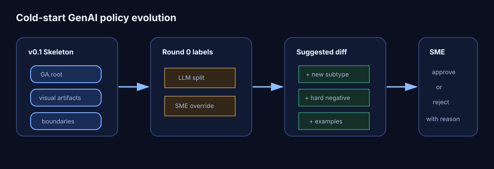

High-reasoning committee
Multiple high-reasoning models vote independently, cite policy evidence, and expose disagreements for SME review instead of hiding uncertainty behind a single label.
SME-in-the-loop RLHF policy graph
RUSH uses high-reasoning model voting, grounded consensus audits, and Obsidian-style graph-based Markdown policies to turn SME labels, LLM disagreements, and policy clarifications into versioned decision quality infrastructure. The first pilot cold-starts GenAI image classification.

About
Multiple high-reasoning models vote independently, cite policy evidence, and expose disagreements for SME review instead of hiding uncertainty behind a single label.
Every category, boundary, exception, and clarification is a Markdown node with frontmatter, examples, graph edges, and source anchors.
Gold/platinum SME labels drive final metrics. Model consensus is a risk signal for routing, audits, and policy iteration — not silent ground truth.

Obsidian graph
Golden set registry
Labeling
Policy iteration
Metrics